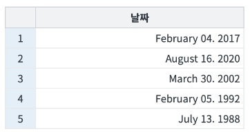
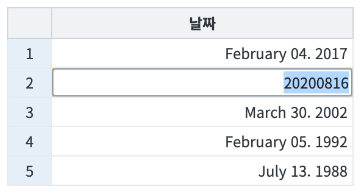
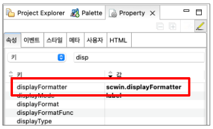
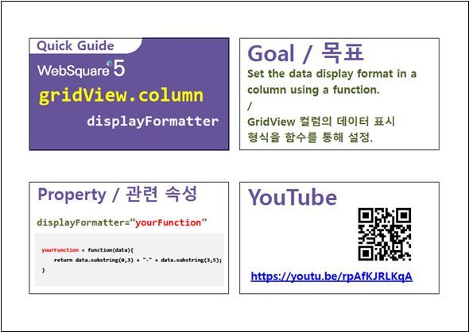

GridView 컬럼의 속성 displayFormatter에 관한 예제입니다. displayFormatter는 화면에 보여지는 데이터의 형태를 변환해 주는 속성으로 함수를 지정합니다. 함수를 직접 작성해 문자열을 처리하기 떄문에 좀 더 복잡하고 다양한 방식으 포맷을 적용할 수 있습니다.
GridView의 컬럼에 displayFormatter 적용하기
STEP 1. 초기 상태를 확인합니다.
GridView의 컬럼에 displayFormatter가 적용된 상태를 확인합니다.
그림 1.브라우저(Chrome) 실행 예시

STEP 2. 컬럼을 더블클릭해서 원본 값을 확인합니다.
Cell을 더블 클릭하면 editMode가 활성화돼 원본 값을 확인할 수 있습니다.
그림 2.브라우저(Chrome) 실행 예시

STEP1. displayFormatter로 사용할 함수를 작성합니다.
displayFormatter 함수는 매개변수로 원본 데이터를 문자열로 받고 처리 결과 문자열을 반환해야합니다.
소스 코드
/**
* 날짜 컬럼 displayFormatter
*/
scwin.displayFormatter = function (data) {
// data: 원본 데이터
var dd = data.substr(6, 2);
var MM = data.substr(4, 2);
var yy = data.substr(0, 4);
if (MM == "01") {
MM = "January";
} else if (MM == "02") {
MM = "February";
} else if (MM == "03") {
MM = "March";
} else if (MM == "04") {
MM = "April";
/* 중략 */
} else if (MM == "12") {
MM = "December";
}
// result: 처리 결과
var result = MM + " " + dd + ". " + yy;
return result;
}STEP2. displayFormatter를 적용할 GridView 컬럼 속성에 작성한 함수 명을 입력합니다.
그림 3.웹스퀘어5 SP5 스튜디오의 DataList Property View(속성창) 예시

[필수] displayFormatter="scwin.displayFormatter"
displayFormatter로 설정할 함수 명을 입력합니다.
displayFormatter
[웹스퀘어5 SP5 개발 가이드] GridView - displayFormatter
링크 : https://docs1.inswave.com/sp5_user_guide/86bdcf48029b958b#2f2bbc8ad19b04ac
GridView 행 번호 표시 컬럼의 헤더 값, 폭, 배경색 지정
링크 : https://youtu.be/rpAfKJRLKqA
